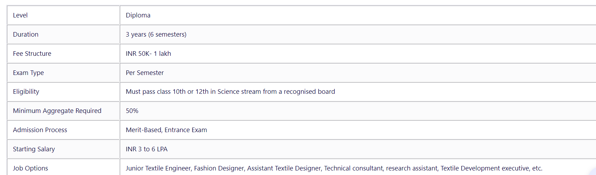
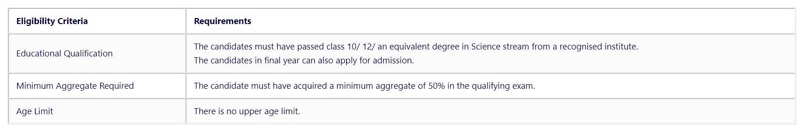
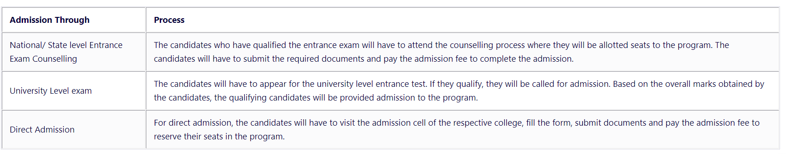

Diploma in Textile Engineering is a diploma level professional degree which is offered in the stream of engineering and is of a total of 3 years duration. The students who have passed class 10th can opt to pursue a diploma degree in Textile Engineering. Through this course, the candidates are offered theoretical and practical knowledge in terms of basic concepts of Textile Engineering such as Textile development, textile design concept, screen printing, etc. The course is divided into six semesters. The average tuition fee for Diploma in Textile Engineering ranges somewhere in between INR 50k to 1 lakh, depending on the type of the institution.
The major highlights of the Diploma in Textile Engineering course are given in the table below:
The candidates will have to fulfil certain eligibility criteria to get admission to the Diploma in Textile Engineering course which is given in the table below:
The admission process for the Diploma in Textile Engineering course depends on various factors. The detailed admission process is given below: -
Diploma in Textile Engineering Course FeeThe course fee for Diploma in Textile Engineering depends on various factors such as the type of the institute, the popularity/ ranking of the institute, and the merit/ scholarship earned by the student. For instance, the student having higher marks in the entrance exam will be provided higher scholarship, accounting for a lower course fee as compared to students with direct admission. On the other hand, the government based institutes will have much lower fees as compared to private institutes. On average, the course fee for Diploma in Textile Engineering program ranges somewhere in between INR 50k to 1 lakh.
After completing a course in Diploma in Textile Engineering, the candidates can opt for various career opportunities and job prospects. The candidates who have pursued Diploma in Textile Engineering can go for either a government-based or a private based Textile Corporation. The various job options which the candidates can off after pursuing a degree in Diploma in Textile Engineering includes
The starting salary of a candidate for a Diploma in Textile Engineering ranges in between INR 3 to 6 LPA.